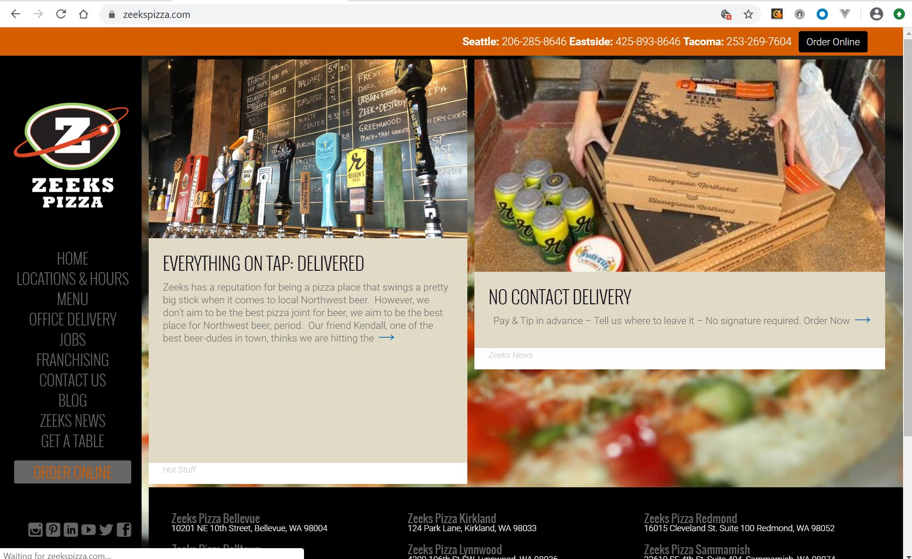
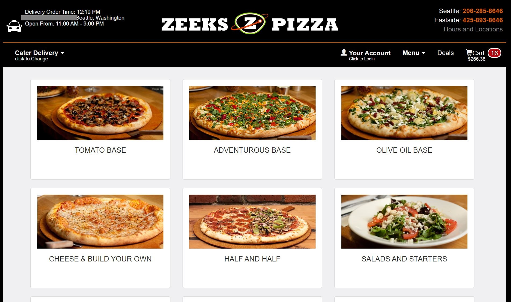
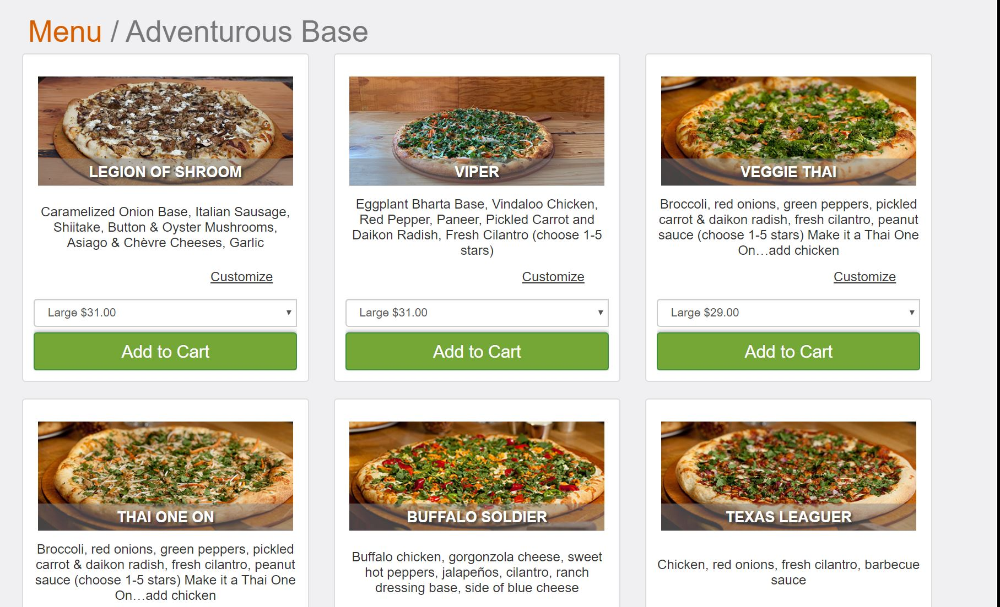
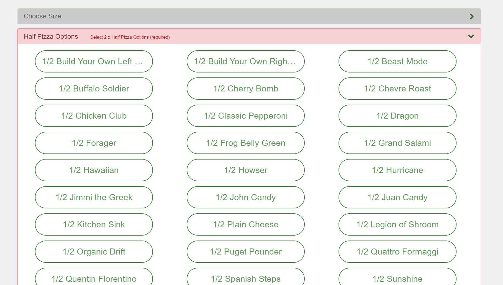
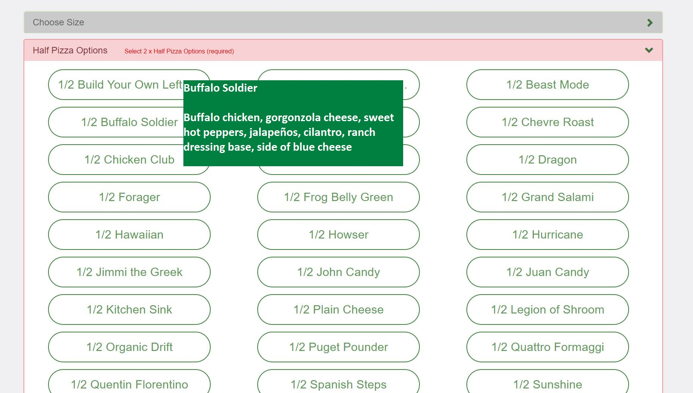
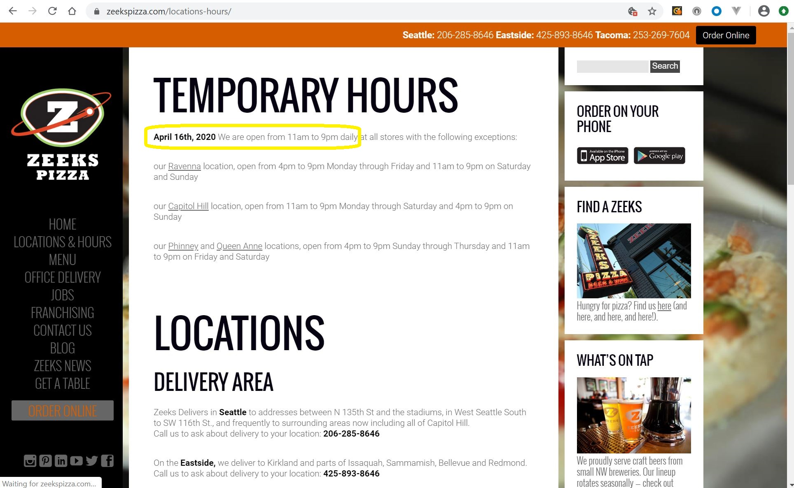
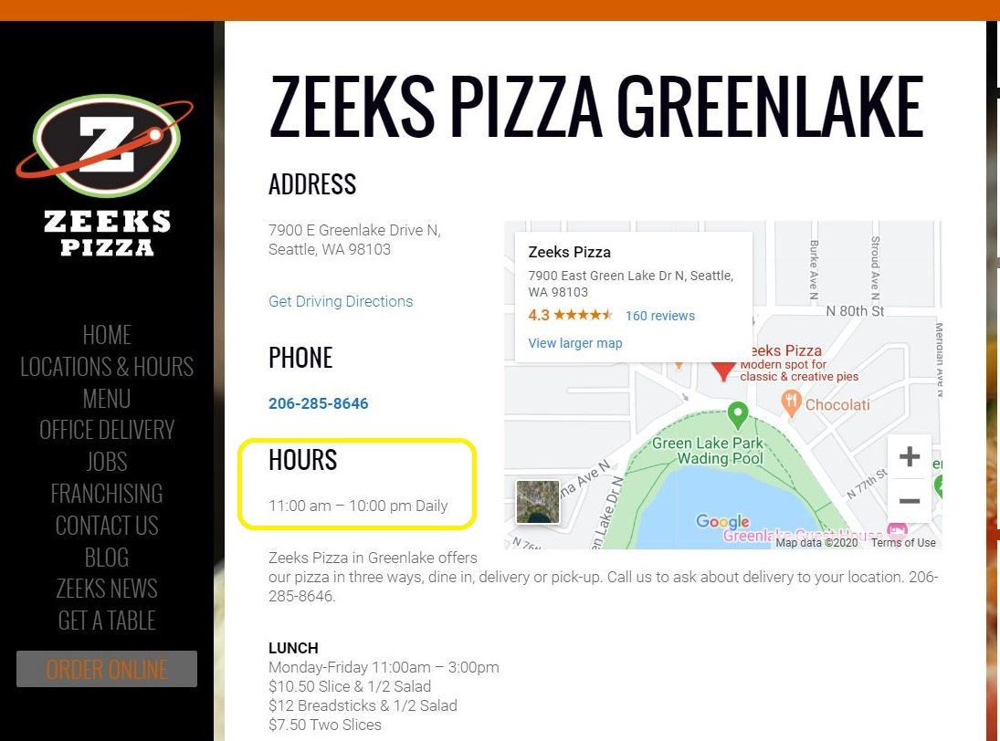

Usability Test for Zeeks Pizza website
Zeeks Pizza is a Seattle based Pizza business with 17 locations. Zeeks Pizza's website is www.zeekspizza.com. This post presents the results of a round of usability testing on the Zeeks Pizza website.
 The Home Page for Zeeks Pizza.Usability Test Overview
Test Purpose
Identify the top issues that users encounter when creating an online order from Zeeks Pizza.
Test Methods
The tests were conducted in two ways. In person testing was done on a laptop and the Chrome web browser. Remote testing was conducted with the participant's laptop and choice of web browser. Tests were recorded using Zoom. The full script of this usability test can be downloaded here.
Participant Demographics
The usability tests were conducted with 3 participants between April 21st and April 25th. All participants typically spent multiple hours per week browsing the internet and had eaten pizza before. Two of the users were familiar with the business. One of the users had eaten at the restaurant. None of the participants had used the Zeeks Pizza website to order pizza before.
Test Results
Issue 1: Confusing Online Ordering Menu
 The first page of the online ordering process starts with the options "Tomato Base", "Adventurous Base", "Olive Oil Base".  A selection of unique "Adventurous Base" pizzas are offered by Zeeks Pizza.All users were easily able to begin the online ordering process. However, all users paused on the first screen of the ordering menu. The unusual categorization of pizzas led to some confusion. Users described the large selection of pizzas on subsequent pages as overwhelming or confusing. One user thought the "Olive Oil Base" was the name of a pizza rather than a category of pizzas with olive oil as the primary sauce.
Proposed Improvement 1
Restructure the categorization of pizzas in the menu. Addition usability testing is recommended to determine the categorization that makes the most sense to customers. Based on other pizza websites, here are some ideas to test:
- Group all pizzas into a top level category of Pizza. (This would sit along side other top level categories of "Salads and Starters", "Beverages", Desserts...)
- Categorize pizzas by primary topping: Meat, Chicken, Vegetarian, Choose Your Own.
- Categorize pizzas by familiarity: Popular, Basic, Specialty, Custom
- Categorize pizzas by base: Tomato, Olive Oil, Adventurous (or other), Choose Your Own
Issue 2: Half and Half Pizzas
 The half and half ordering page for Zeeks Pizza offers a wide variety of options.Based on these tests, Zeeks Pizza has accurately identified that customers are interested in half and half pizzas. Users were delighted to be able to customize their pizza in this way on the website. However, they had trouble selecting the pizza types on the Half and Half ordering page. There are lots of pizza options, but no descriptions of the pizzas. Participants didn't know what a "Frog Belly Green" pizza was or how it differed from a "Buffalo Soldier".
Proposed Solution 2
 The addition of pizza descriptions helps users choose their pizza.Add pizza descriptions to the Half and Half pizza ordering page. To keep the ordering page minimal, these could appear only upon mouse over.
Another way to help participants process the vast options on this page would be to categorize the pizzas by type, leveraging the same type categories used on the whole pizza ordering section.
Issue 3: Store hours are not accurate
 The Location and Hours Page states temporary hours of 11am-9pm.  The Greenlake Store Page states hours of 11am-10pm.On the Hours and Location page for all Zeeks Pizza locations, there is an announcement for temporary store hours of 11am-9pm for most locations.
Two of the test participants read the incorrect information on the Greenlake store detail page without seeing the special annoucement of temporary hours.
Customers who wanted a late dinner pizza delivery may be disappointed to discover that Zeeks is already closed. Users may be frustrated and lose trust in the information presented on the Zeeks Pizza website if the store hours information they read on the website is inaccurate.
Proposed Improvement 3
In addition to the special announcement of temporary changes to the store hours, the store hours on the individual store location pages should also be updated.